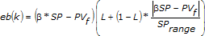

The PID Advanced VI uses the same algorithm and assumptions as the PID VIs algorithm, but adds the functionality described in the following sections.
The following simulation diagram represents the PID implementation provided by the PID Advanced VI:
|
Note��Constructing a simulation diagram like the one in the previous image requires the LabVIEW Control Design and Simulation Module. However, the PID VIs implement PID controllers for you. You do not need the Control Design and Simulation Module to build PID controllers. Refer to the National Instruments website at ni.com for more information about the Control Design and Simulation Module. |
In some situations, you might need to switch off the PID controller and operate the system in open-loop, or manual, mode. The PID Advanced VI uses a method similar to the anti-windup algorithm to ensure the transition between manual and automatic modes does not cause any bump to the output of the controller.
Setpoint weighting refers to corrections applied to the error value of the controller. The beta input (Β), which can range between 0 and 1, is applied to the proportional action as:
| where | e is the error |
| SP is the setpoint | |
| PV is the process variable | |
| Kc is controller gain |
You can use the beta input to reduce the overshoot of setpoint change and to allow increasing the gain of the controller to improve the disturbance rejection of the controller.
The gamma (γ) input, which also can range between 0 and 1, is applied to the error and to the derivative as:
 )
)The derivative action implemented by the PID Advanced VI is based on the backward method for derivative action. However, depending on the values of the derivative action, proportional gain, and sampling time, the controller could generate responses with fast oscillation, especially when performing autotuning with PID. To prevent this issue, this VI provides an alpha () parameter that implements an additional filter for the derivative action (D). This filter reduces the bandwidth content as defined by:
where Td is the derivative time in minutes, also called the rate time.
The linearity input introduces linearity change on the gain, as shown in the following equations:
The error for calculating proportional action with two degree-of-freedom control is shown in the following formula:

| where | SPrange is the range of the setpoint |
| � is the setpoint factor for the two degree-of-freedom PID algorithm described by the proportional action formula | |
| L is the linearity factor that produces a nonlinear gain term in which the controller gain increases with the magnitude of the error |
If L is 1, the controller is linear. A value of 0.1 makes the minimum gain of the controller 10% Kc. Use of a nonlinear gain term is referred to as an error-squared PID algorithm.